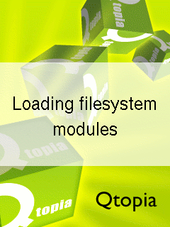

| Home · All Classes · Annotated · Functions |
The following table lists the stages of the Greenphone boot process. It contains a description of the actions performed during each stage of the boot process and an image of what the user should see on the LCD screen during each stage.
| Boot Stage | Description | |
|---|---|---|
| Power on | ||
| Hardware reset condition. |  | |
| Initial Program Loader (IPL) | ||
| Immediately after system reset the System CPU executes code from the IPL area of the Disc-on-Chip device. The IPL partially initializes the Disc-on-Chip device and loads the Secondary Program Loader (SPL) into RAM and executes it. | | |
| Secondary Program Loader (SPL) | ||
The SPL provides two facilities:
After control is passed from the IPL to the SPL, the SPL initializes the hardware necessary to perform its functions including the:
The bootloader splash screen is displayed and the SPL loads and executes either the flash application or the Linux kernel. While the SPL is running the LCD contains the image to the right which is the first image displayed on the Greenphone LCD screen. |  | |
| Linux Kernel | ||
| The kernel initializes all hardware with built-in drivers and displays the kernel splash screen on the LCD screen. The internal initial RAM disc is mounted and the Disc-on-Chip driver module is loaded. The initial RAM disc is unmounted. The kernel startup sequence continues until /sbin/init is executed in User Space and control of the boot sequence is passed over to it. |  | |
| Init | ||
| The /sbin/init process controls the User Space startup sequence which is defined in the /etc/inittab file as follows: | ||
| /etc/rc.d/rc.modules boot Loads filesystem modules required to mount all internal filesystems and mini SD cards containing Qtopia updates. |  | |
| /etc/rc.d/rc.filesystems Linux provides an interface into the kernel via the proc virtual filesystem. This proc virtual filesystem is mounted on /proc. The Greenphone uses temporary file systems for storing data that does not need to be retained over reboots. Temporary filesystems are mounted and populated at this stage. The temporary filessystems used by the Greenphone include:
| ||
| /etc/rc.d/rc.filesystems The Greenphone contains writeable file systems, which can get corrupted if the device is not shutdown correctly. All writeable filesystems on the device are checked for errors and automatically repaired, if possible. | ||
| /etc/rc.d/rc.filesystems The internal storage of the Greenphone is divided into four block devices. The first block device /dev/tffsa is partitioned in two and contains the read-only root filesystem and Qtopia image. The three remaining block devices, /dev/tffsb, /dev/tffsc and /dev/tffsd are used for 3rd party software, system configuration data and user documents, respectively. These block devices are mounted at the following paths:
| ||
| /etc/rc.d/rc.newrootfs Normally re-flashing the Greenphone will only update the kernel and the first block device. Only flashing the the first block device preserves user data during the re-flashing operation. Updates for the block devices that are not flashed are stored in the root filesystem in compressed form. The system detects if the following directory hierarchies need to be updated:
| ||
| /etc/rc.d/rc.modules The remaining kernel modules are loaded at this stage. This includes drivers for:
| ||
| /etc/rc.d/rc.sysinit Miscellaneous initialization including:
| ||
| /etc/rc.d/rc.lids start Qtopia builds with SXE enabled benefit from kernel level Mandatory Access Controls (MACs). The Greenphone uses the LIDS security framework to implement MACs. If the kernel has LIDS support and an SXE enabled Qtopia is detected, LIDS is initialized and enabled. | ||
| /etc/rc.d/rc.services start Qtopia depends on some underlying services for certain functionality. These services include:
Additionally networking services are also started, include:
The following services are started directly from the /sbin/init process and are automatically respawned if they terminate:
| ||
| /mnt/user/etc/trolltech_startup.sh The Greenphone supports updating Qtopia via an image on a miniSD card. If a miniSD card is present it is mounted and checked for a valid image. | ||
| /mnt/user/etc/trolltech_startup.sh The final stage of the startup process is to start Qtopia. | ||
| Qtopia | ||
|---|---|---|
| Qtopia displays a battery charging screen if it detects that the user plugged in the wall charger or USB cable to initiate the boot sequence. This screen is displayed until the user presses the Hangup key to continue loading Qtopia or unplugs the cable to power off the device. Once the Qtopia home screen is displayed the system has finished booting. | ||
 |
The following table lists the stages of the Greenphone shutdown process. The table contains a description of what actions are performed during each stage of the shutdown process and an image of what the user should see on the LCD screen during each stage.
| Shutdown Stage | Description | |
|---|---|---|
| Qtopia | ||
| User initiated shutdown: The user select 'Shutdown' or 'Reboot' from the shutdown dialog. Qtopia executes the shutdown program with the appropriate arguments. System initiated shutdown: Qtopia will automatically shutdown if it detects a critical power condition. | ||
| Shutdown | ||
| /mnt/user/tools/shutdown The Leaving Qtopia splash screen is displayed for user-initiated shutdowns. For system-initiated shutdowns an error message describing why the system is shutting down is displayed. The shutdown process signals /sbin/init to initiate system shutdown. | ||
| Init | ||
|---|---|---|
The /sbin/init process controls the User Space shutdown sequence which is defined in the /etc/inittab file as follows:
| ||
 |  |  |
| Power off/Reboot | ||
|---|---|---|
| The system is powered-off or reset. | | |
| Copyright © 2007 Trolltech | Trademarks | Qtopia 4.2.2 |